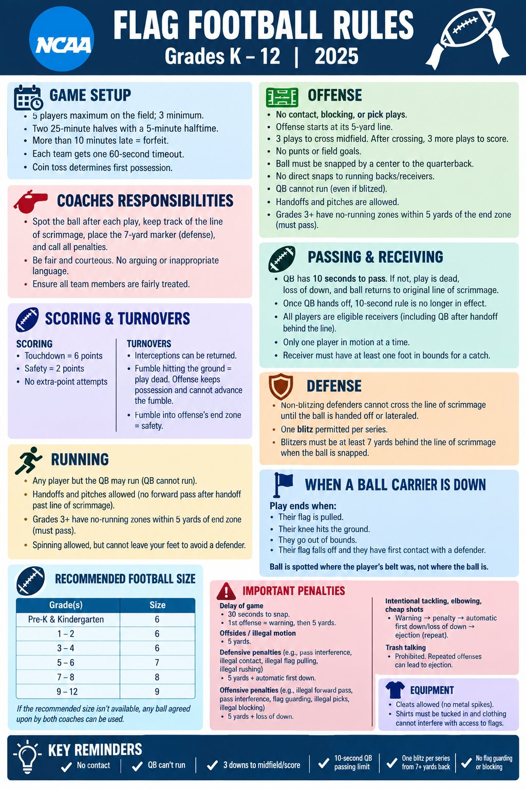

Game setup
- 5 players maximum on the field, 3 minimum.
- Two 25-minute halves with a 5-minute halftime.
- More than 10 minutes late is a forfeit.
- Each team gets one 60-second timeout.
- A coin toss determines first possession.
From the league's flag football rules sheet for grades K to 12. The original sheet is at the bottom of this page.
The play ends when:
The ball is spotted where the player's belt was, not where the ball is.
